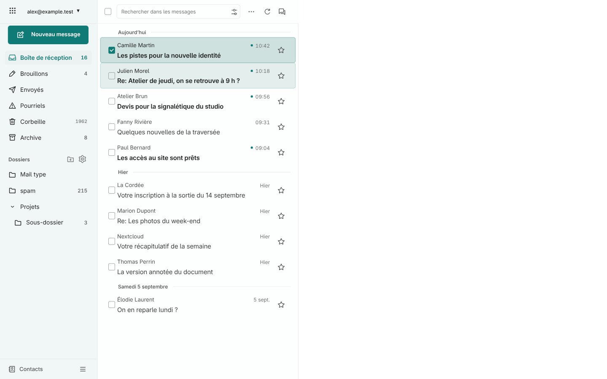
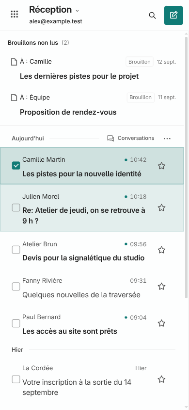
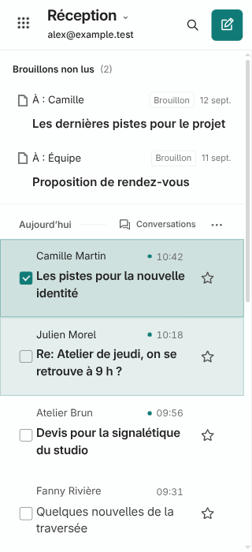
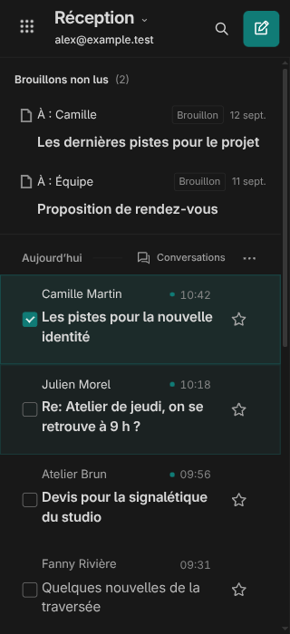

La barre Nextcloud laisse place à sa grille d’applications native, intégrée en haut à gauche. Le mail occupe toute la fenêtre. Les cases sont centrées avec les étoiles et les messages cochés ont un fond plus soutenu.
Sur mobile, la recherche s’ouvre sous la barre depuis une icône. Le compte et la rédaction restent visibles, même à 320 px.
Aperçus fictifs, desktop et mobile. 18 contrôles de navigation et sélection, 15 contrôles des métadonnées. Version 1.7.3 activée et vérifiée dans la session Chrome connectée le 12 septembre 2026 : cadre supprimé sur desktop et mobile, menu natif des applications fonctionnel.



